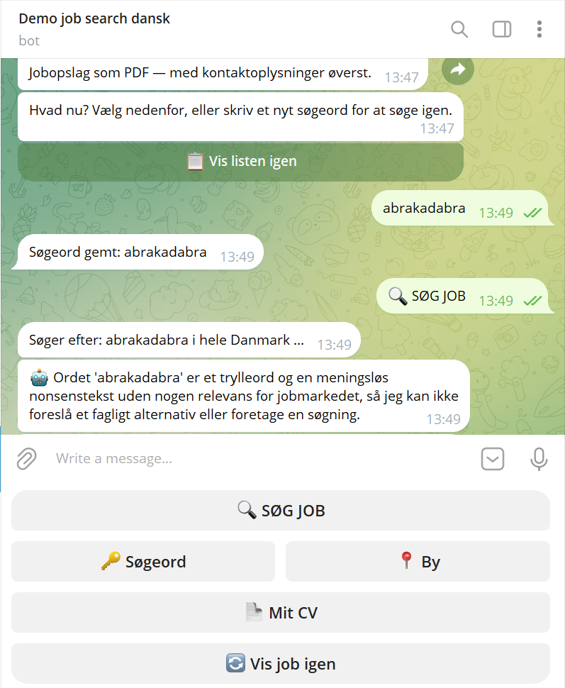
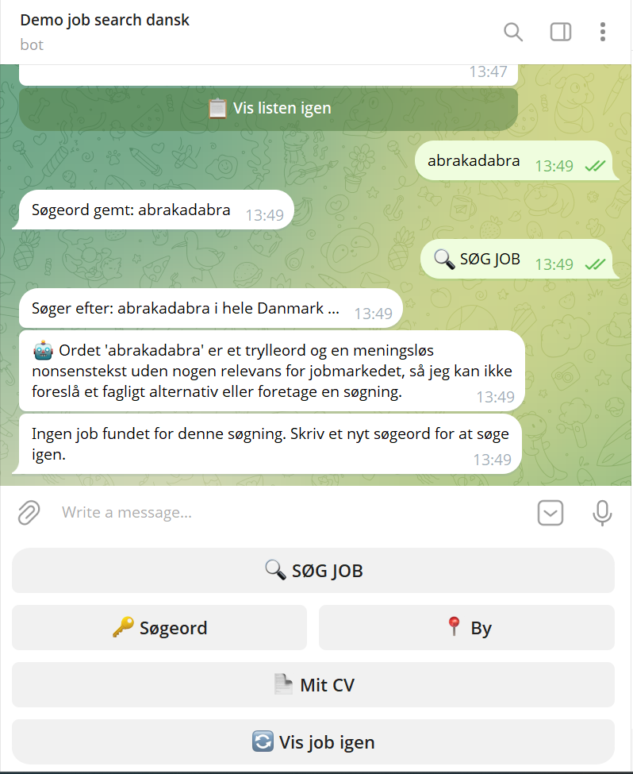

Agentisk søgning: AI'en tænker selv, når søgningen er tom
Ikke en fast liste af synonymer — når en søgning giver 0 resultater, får Gemini adgang til et rigtigt søgeværktøj og beslutter selv, om og hvad den vil prøve i stedet.
0 resultater
Søgeordet findes ikke direkte i nogen jobopslag — botten aktiverer automatisk AI'en i stedet for bare at vise "intet fundet".
AI'en vælger selv
Gemini foreslår ét bredere eller synonymt dansk ord, kører en rigtig søgning med det, og ser det reelle resultat — højst 2 forsøg, aldrig flere.
Ærligt afslag på nonsens
Giver søgeordet ingen mening, siger AI'en det ærligt i stedet for at gætte et tilfældigt ord.
Rigtigt eksempel — søgeord med stavefejl: "boghlder" Ordet 'boghlder' er en typisk stavefejl for den danske jobtitel bogholder, så jeg prøver at søge på den korrekte stavemåde i stedet. → Prøvede «bogholder»: 61 job fundet.

Rigtigt eksempel — søgeord: "abrakadabra" "abrakadabra" er et trylleord og en meningsløs tekst i en jobmæssig sammenhæng, og det kan derfor ikke tolkes som et rigtigt fagområde eller en jobtitel.

